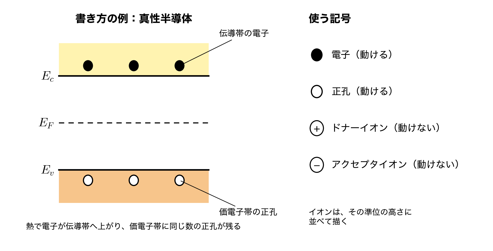
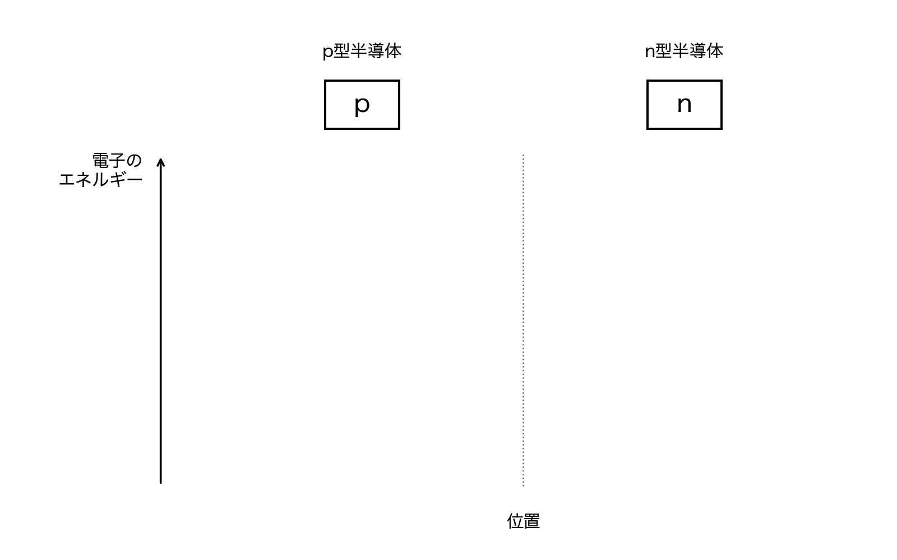
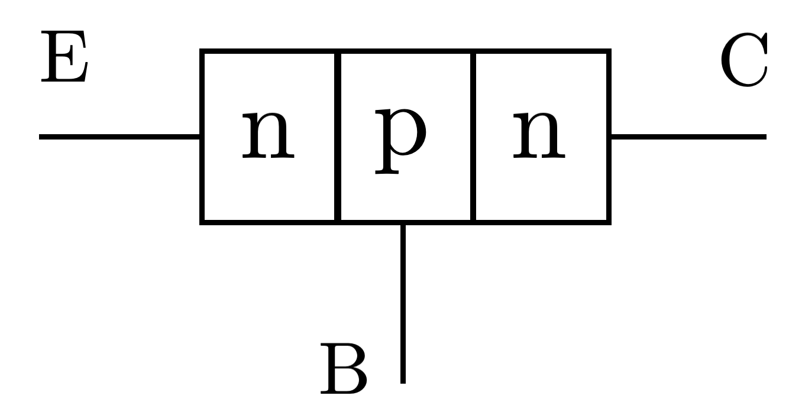
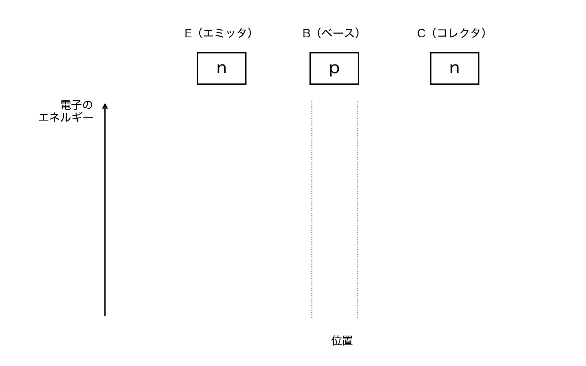
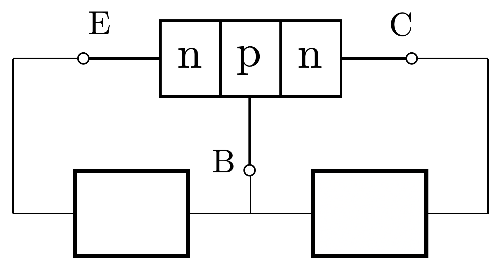

提出について
- 解答用紙は各自で準備すること。コピー用紙でも構いません。
- 解答用紙の左上に第何回目の授業の演習問題かを記入し、右上には自分の学生番号と名前を記入する。
- 解答用紙を写真で撮って、Google Classroom の演習問題の該当先に提出する。
この演習問題は、下記の理解度を確認することを目的としています。
問題1：pn接合の形成過程
- 接合前の p型・n型半導体のバンド図を描き、それを使って接合直後のキャリアの動きと、その結果できる領域を説明できるか。
- 平衡状態でバンドが曲がる理由と、フェルミ準位が空間的に一定になる理由を説明できるか。
問題2：バイポーラトランジスタのバンド構造
- n型・p型・n型の接合について、熱平衡状態のバンド構造を描けるか。
問題3：バイポーラトランジスタの順方向バイアス
- E-B 間に順方向バイアス、B-C 間に逆バイアスをかける電圧源の向きを判断できるか。
- バイアスをかけたときのエネルギーバンド図を、$E_{c},E_{F},E_{v}$ と $V_{d}$、$V$ を使って描けるか。
問題１：pn接合の形成過程
p型半導体とn型半導体を接合して平衡状態になるまでの過程を説明するために、以下の(1)、(2)の問いに答えなさい。
- 接合した直後に何が起こるかを、エネルギーバンド図を描いて説明しなさい。バンド図は、接合する直前のp型半導体とn型半導体のそれぞれについて、伝導帯の下端$E_c$、価電子帯の上端$E_v$、フェルミ準位$E_F$の位置関係が分かるように描き、それを使ってキャリア（電子と正孔）がどちらへ動くかを示すこと。また、その結果として接合界面付近に形成される領域を何と呼ぶか。
- 最終的な平衡状態におけるpn接合のエネルギーバンド図を描きなさい。なぜバンドが曲がるのか、そしてなぜフェルミ準位は空間的に一定になるのかを説明しなさい。
(1)、(2)のバンド図には、電子（●）、正孔（○）、ドナーイオン（⊕）、アクセプタイオン（⊖）も描き込むこと。どこに、どれだけあるかが分かるように描く。書き方の例（真性半導体）を下に示す。

(1)、(2)のバンド図は、下の枠を解答用紙に写して描き込んでよい。

問題２：バイポーラトランジスタのバンド構造
下図は、トランジスタなどに用いられるバイポーラトランジスタの構造である。
この時の熱平衡状態におけるバンド構造を図示せよ。*n型・p型・n型半導体の接合のみで良い。

下の枠を解答用紙に写して、バンド図を描き込んでよい。

問題３：バイポーラトランジスタの順方向バイアス
バイポーラトランジスタはE(エミッタ)-B(ベース)間に順方向バイアス、B(ベース)-C(コレクタ)間に逆バイアスをかけると、電子をE(エミッタ)からC(コレクタ)に流すことができる。この時の電圧源はどのような向きで接続すれば良いか。下図の四角に電圧源を向きがわかるように記入せよ。

この時のエネルギーバンド図を図示せよ。エネルギーバンドは$E_{c},E_{F},E_{v}$がわかるように明記せよ。ここで、拡散電位を$V_{d}$、印加した二つの電圧源の電圧を$V$とする。
問題２と同じく、下の枠を使ってよい。